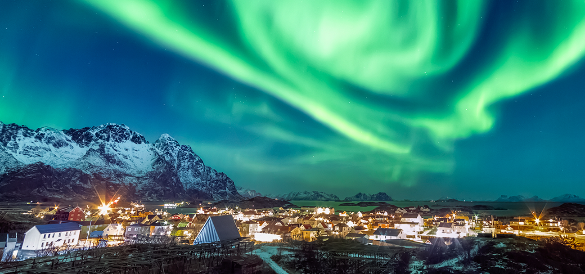
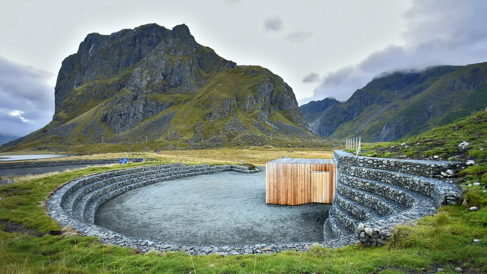
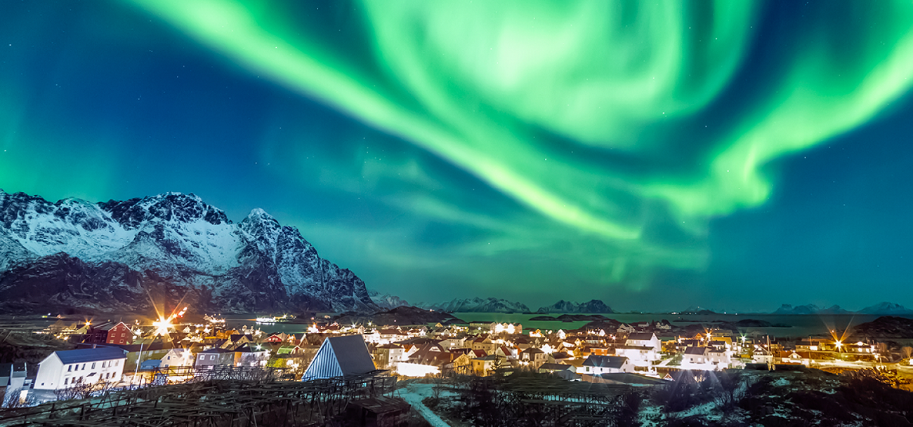
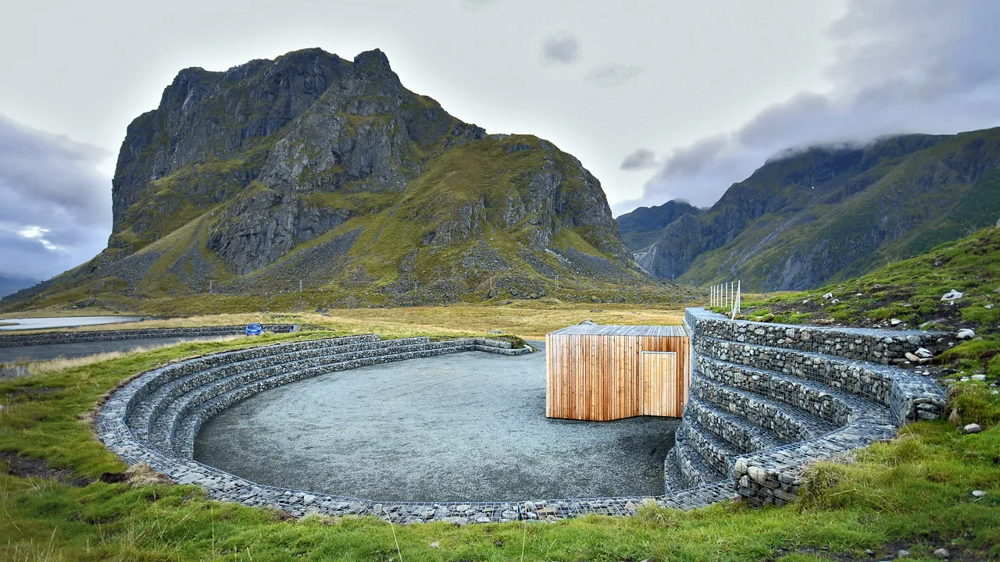
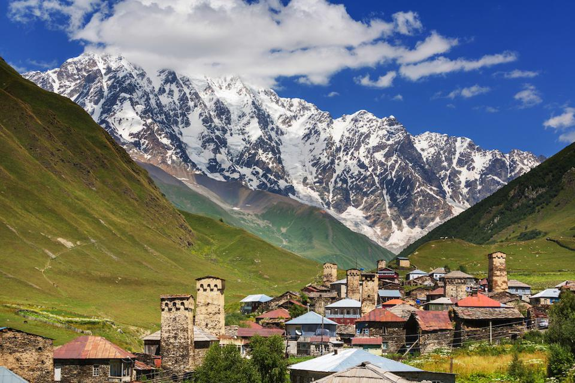
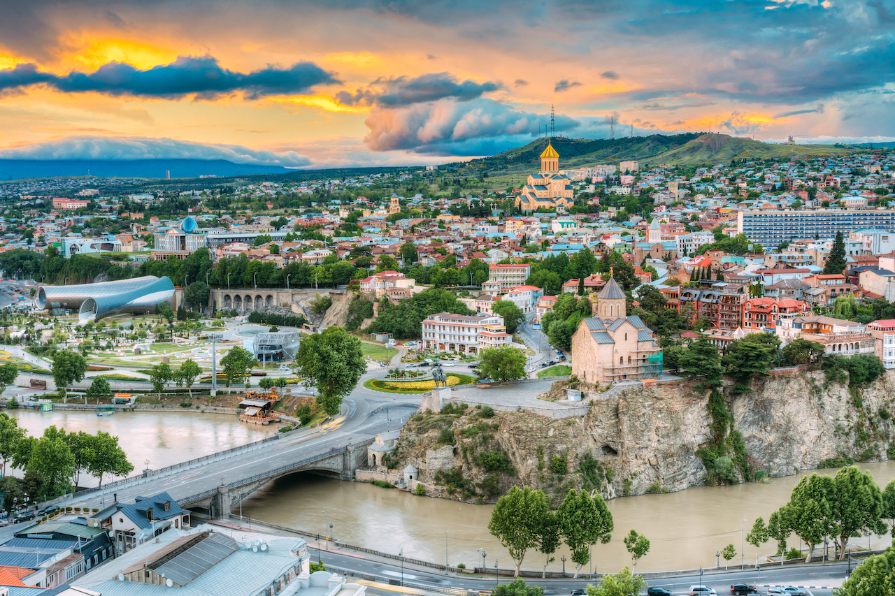
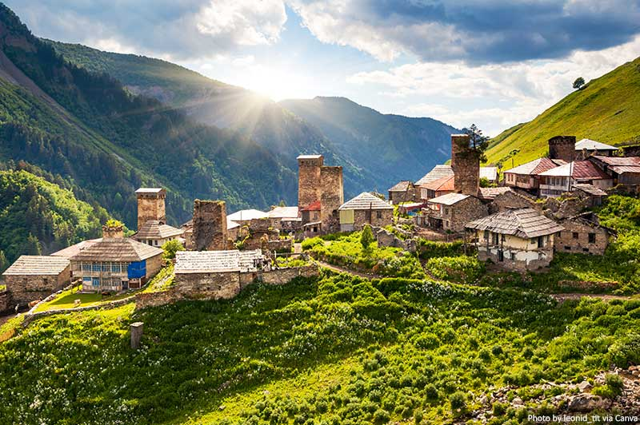
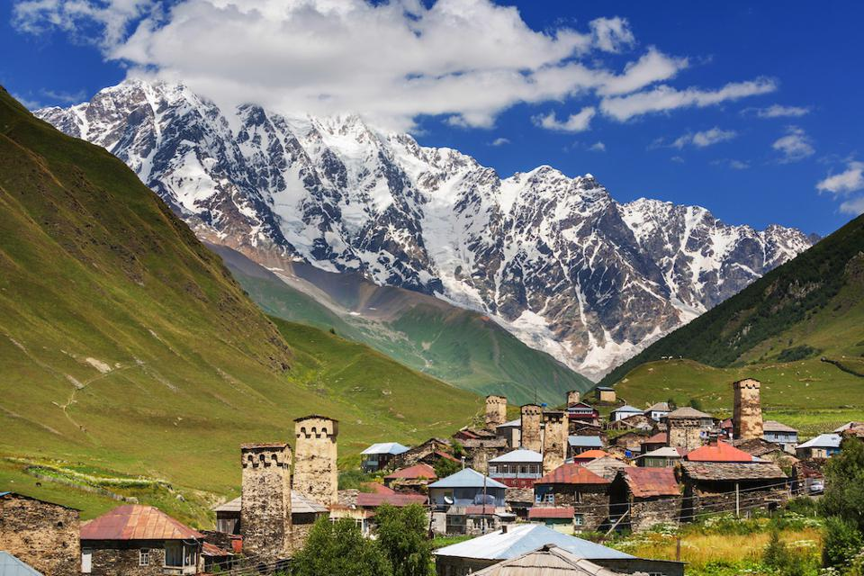
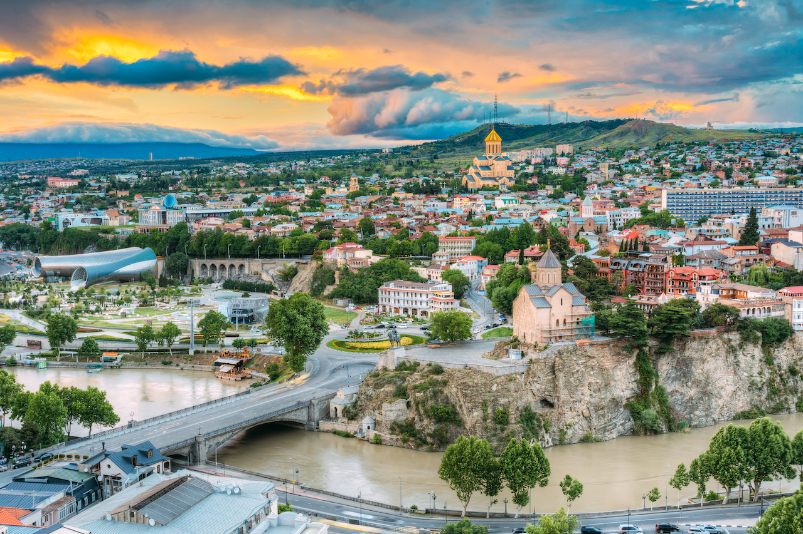
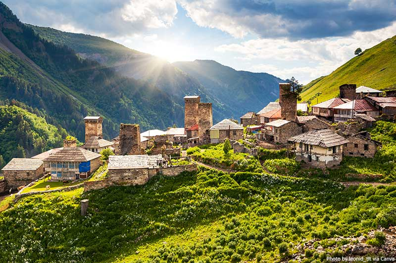

Our world is an amazing place! Many countries, different nature, very special people - every time we discover the
world in a new way, despite the fact that we travel to the same country several times a year. Our team has set
itself the goal of discovering
for you those countries that we love and appreciate, and where we travel with pleasure. Again and again. We
decided to write an informative article for you and name the TOP countries where, according to our active
recreation club, you should definitely
go!
1. Norway - the country of fjords and trolls
Few people have not heard of Norway with its very special culture. This is a country where reality and a fairy
tale meet - the citizens of Norway believe in trolls with all conviction and know that even in the most ordinary
environment there is a
place for a miracle.
Surely, you yourself have heard a lot about Norway - about the country of fjords and Vikings, where from a
mixture of water in all its states of aggregation, rocks, greenery and a very special atmosphere, an amazing
world emerges that attracts
you with its unusualness. Fjords and ferries are a big part of the most popular excursions. People come here to
look at the rocks from the water, swim through all the fjords, visit the Lofoten Islands, learn more about the
harsh life of the Vikings
and go fishing.
We look at Norway from the other side. Active holidays with us are trekking, excursions to untrodden places
and new places that are unlike anything else. Preacher's Rock, Pea, Troll's Tongue, Folgefonna Glacier, Mount
Galkhepiggen, Bessegen
Trail - we see all this with our own eyes and get to know the very soul of Norway!
2. Hospitable Georgia and the secrets of antiquities
Another important place in our trips is occupied by Georgia - a country that is famous for its incredible
hospitality and original culture. Georgia is not only a country of beach holidays. Of course, Batumi, Ureki and
Kobuleti cannot be deleted from
the list of cities that must be visited, but for those who want to fully get acquainted with the sights of the
country, delve into the foundations of life, appreciate the beauty of nature and touch the secrets of one of the
most ancient nationalities
- this is not enough.
Trips of the active recreation club to Georgia have a large excursion component. We not only go to Georgia
to taste the local cuisine and enjoy wine tastings, but also to touch the secrets of this country with a big
heart. Caves and cave cities,
monasteries, fortresses, canyons, waterfalls are just a small part of what we visit on our trips around Georgia.
We learn about the architectural features of popular ensembles and devote a lot of time to rest - active and not
very active.
3. Iceland, land of ice and fire
Iceland has its secrets and invariably excites the imagination. "A country located on another planet" - as it is
sometimes called. And getting there, we are convinced every time that this is so.
Arriving in Iceland, every time we are amazed by its majestic beauty. Eyjafjallajökull, Krapla, Grimsvetn
volcanoes, Gelsir and Strokkur geysers, Gullfoss and Skogafoss waterfalls are the hallmark of Iceland, and on
every our trip we cannot
afford to miss visiting them. And although the team of our active travel club has repeatedly visited the most
interesting places in Iceland, every time we are surprised again and again by the inner power that sleeps in the
bowels of the land of
the land of fire and ice. If you haven't been to Iceland yet, don't delay! This country is a must to visit! Must
see!
✈Where to look for flights?✈
-
Aviasales is the largest and most
popular meta-search engine (the one that searches for both agencies and airlines) in Russia. Start your
search with him.
- Aviasales bot
for messengers - in Telegram, Viber, FB Messenger and Slack, you can configure the
bot to search for abnormally cheap prices.
Convenient setting via mobile. browser version and push directly to telegram. You can choose the
direction "anywhere", or something specific and set the discount amount (for example, 40% of the average
price). In short, a fire bot is 100
times better than an email subscription.
-
Omio - the application
aggregates offers for planes, buses and trains and builds cheap routes. For example, you need to get
from Berlin to Lyon. Answer: low-cost
EasyJet from Berlin to Geneva for 40 €, and then by bus to Lyon for 15 €.
-
Relocatus is a website and telegram channel with
useful guides and news for those who have relocated / emigrated or are just about to.
 



 




